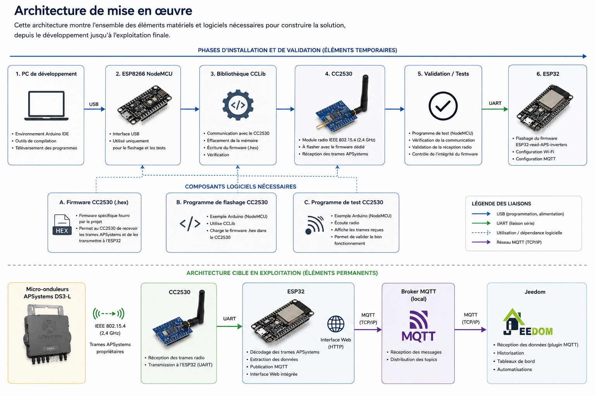

Préparation de l'environnement¶
Pourquoi cette étape ?¶
L'architecture cible présentée précédemment ne montre que les composants nécessaires au fonctionnement quotidien de la solution.
Pour mettre en œuvre cette architecture, plusieurs composants et logiciels complémentaires sont nécessaires durant les phases d'installation, de configuration et de validation.
Cette page présente l'ensemble des éléments utilisés pour construire la solution.
Architecture de mise en œuvre¶

Éléments matériels nécessaires¶
Micro-onduleurs APSystems¶
Installation équipée de micro-onduleurs APSystems DS3-L.
Ils constituent la source des données de production.
Module radio CC2530¶
Le module CC2530 assure la réception des trames radio émises par les micro-onduleurs.
Il doit être préalablement flashé avec un firmware spécifique fourni par le projet ESP32-read-APS-inverters.
ESP32¶
L'ESP32 exécute le firmware principal.
Il réalise :
- la réception des données du CC2530 ;
- le décodage des trames APSystems ;
- la publication MQTT ;
- l'exposition d'une interface Web locale.
ESP8266 NodeMCU¶
L'ESP8266 NodeMCU n'est pas utilisé dans l'architecture finale.
Il est utilisé temporairement pour :
- flasher le CC2530 ;
- valider son bon fonctionnement ;
- réaliser les premiers tests radio.
Une fois l'installation terminée, il peut être retiré.
Composants logiciels nécessaires¶
Firmware CC2530¶
Le projet fournit un firmware spécifique permettant au CC2530 de recevoir les trames APSystems et de les transmettre vers l'ESP32.
Ce firmware est fourni sous forme de fichier HEX.
Bibliothèque CCLib¶
La bibliothèque CCLib est utilisée pour programmer le CC2530 à partir du NodeMCU.
Elle permet :
- l'identification du composant ;
- l'effacement de la mémoire ;
- le chargement du firmware ;
- la validation du flashage.
Programme de validation du CC2530¶
Un programme complémentaire permet de vérifier le bon fonctionnement du module radio après son flashage.
Cette étape permet de confirmer :
- la communication avec le CC2530 ;
- la réception radio ;
- l'intégrité du firmware.
Firmware ESP32-read-APS-inverters¶
Le firmware principal est installé sur l'ESP32.
Il assure :
- le décodage du protocole APSystems ;
- l'extraction des données ;
- la publication MQTT ;
- l'interface Web de supervision.
Résumé¶
Pour reproduire le projet, il faut distinguer :
Éléments permanents¶
- Micro-onduleurs APSystems
- CC2530
- ESP32
- Broker MQTT
- Jeedom
Éléments temporaires d'installation¶
- ESP8266 NodeMCU
- CCLib
- Firmware CC2530
- Outils de validation
Cette distinction permet de mieux comprendre quels composants sont nécessaires au fonctionnement quotidien et quels composants interviennent uniquement durant la phase de mise en œuvre.